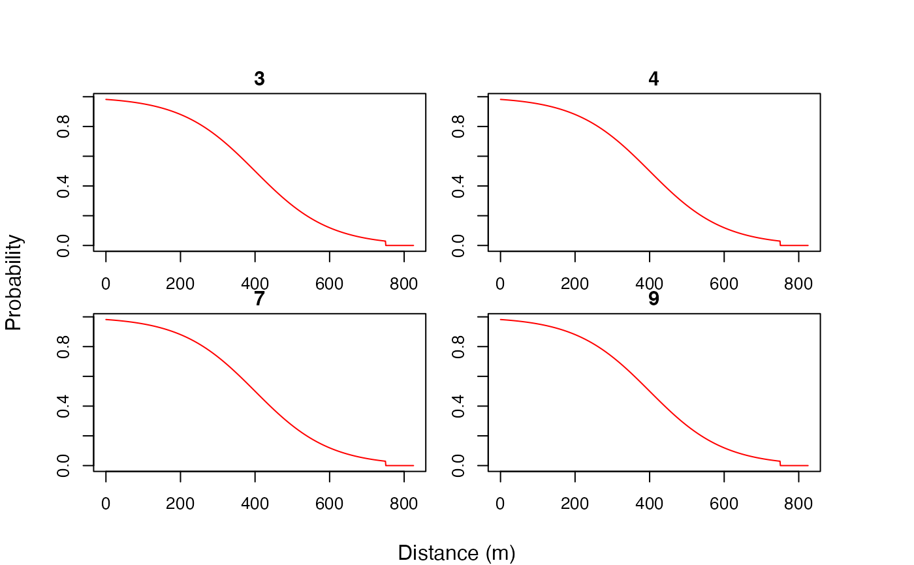

Usage
# S3 method for class 'ModelObsAcousticLogisTrunc'
plot(x, .sensor_id, .par = list(), ...)
# S3 method for class 'ModelObsDepthUniformSeabed'
plot(x, .seabed = 100, .par = list(), ...)
# S3 method for class 'ModelObsDepthNormalTruncSeabed'
plot(x, .seabed = 100, .par = list(), ...)
# S3 method for class 'ModelObsContainer'
plot(x, .radius, .par = list(), ...)Arguments
- x
A named
listof observation model parameters, including aModelObsS3label (from amodel_obs_*()function).- .sensor_id, .radius, .seabed
Model-specific parameters:
.sensor_id: Forplot.ModelObsAcousticLogisTrunc(),.sensor_idcontrols the sensors (receivers) for which detection probability curves are shown:missing(default) plots all unique curves;An
integervector of sensor IDs plots curves for selected sensors;NULLplots curves for all sensors;
.radius: Forplot.ModelObsContainer(),.radiuscontrols the radii for which distributions are shown:missing(default) plots distributions for first three unique radii;A vector of radii plots curves for selected radii;
NULLplots distributions for all radii;
.seabed: Forplot.ModelObsDepth*Seabed(),.seabedis the seabed depth at which distributions are plotted.
- .par
Graphical parameters:
- ...
Additional arguments, passed to
plot().
Value
The functions produce a plot. invisible(NULL) is returned.
Details
Observation model (ModelObs) structures are objects that define the parameters of an observation model. The model specifies the probability of an observation (e.g., a particular depth record) given the data (e.g., a depth measurement).
plot.ModelObsAcousticLogisTrunc()plots detection probability as a function of distance from a receiver;plot.ModelObsDepthUniformSeabed()plots a uniform distribution for the probability of a depth observation around a particular.seabeddepth;plot.ModelObsDepthNormalTruncSeabed()plot a truncated normal distribution for the probability of a depth observation around a particularly.seabeddepth;plot.ModelObsContainer()plots a uniform distribution for the probability of a future observation (e.g., detection) given the maximum possible distance (container radius) from the container centroid (e.g., receiver), and a maximum movement speed, at the current time;
Examples
if (patter_run(.julia = TRUE, .geospatial = FALSE)) {
library(data.table)
julia_connect()
#### Example (1): ModelObsAcousticLogisTrunc
# Plot unique detection-probability function(s)
dat_moorings |>
model_obs_acoustic_logis_trunc() |>
plot()
# Plot functions for selected sensors
dat_moorings |>
model_obs_acoustic_logis_trunc() |>
plot(.sensor_id = unique(dat_moorings$receiver_id)[1:10])
#### Example (2): ModelObsDepthUniformSeabed
data.table(sensor_id = 1L, depth_shallow_eps = 10, depth_deep_eps = 10) |>
model_obs_depth_uniform_seabed() |>
plot()
data.table(sensor_id = 1L, depth_shallow_eps = 10, depth_deep_eps = 10) |>
model_obs_depth_uniform_seabed() |>
plot(.seabed = 50)
#### Example (3): ModelObsDepthSeabedNormalTrunc
data.table(sensor_id = 1L, depth_sigma = 10, depth_deep_eps = 10) |>
model_obs_depth_normal_trunc_seabed() |>
plot()
data.table(sensor_id = 1L, depth_sigma = 100, depth_deep_eps = 50) |>
model_obs_depth_normal_trunc_seabed() |>
plot(.seabed = 150)
#### Example (4): ModelObsContainer
# Define detections (1)
detections <- dat_detections[individual_id == individual_id[1], ]
# Assemble acoustic observations (0, 1) for a given timeline
timeline <- assemble_timeline(list(detections), .step = "2 mins")[1:100]
acoustics <- assemble_acoustics(.timeline = timeline,
.detections = detections,
.moorings = dat_moorings)
# Assemble acoustic containers
containers <- assemble_acoustics_containers(.timeline = timeline,
.acoustics = acoustics,
.mobility = 750)
# Plot a few example distributions
containers$forward |>
model_obs_container() |>
plot()
#### Example (5): Customise plot layout via `.par`
dat_moorings |>
model_obs_acoustic_logis_trunc() |>
plot(.sensor_id = unique(dat_moorings$receiver_id)[1:4],
.par = list(mfrow = c(2, 2)))
#### Example (6): Customise plot properties via `...`
dat_moorings |>
model_obs_acoustic_logis_trunc() |>
plot(.sensor_id = unique(dat_moorings$receiver_id)[1:4],
.par = list(mfrow = c(2, 2),
oma = c(3, 3, 3, 3),
mar = c(1.5, 1.5, 1.5, 1.5)),
xlab = "", ylab = "", col = "red")
mtext(side = 1, "Distance (m)", line = -1, outer = TRUE)
mtext(side = 2, "Probability", line = -1, outer = TRUE)
}
#> `patter::julia_connect()` called @ 2025-04-22 09:31:49...
#> ... Running `Julia` setup via `JuliaCall::julia_setup()`...
#> ... Validating Julia installation...
#> ... Setting up Julia project...
#> ... Handling dependencies...
#> ... `Julia` set up with 11 thread(s).
#> `patter::julia_connect()` call ended @ 2025-04-22 09:31:49 (duration: ~0 sec(s)).
